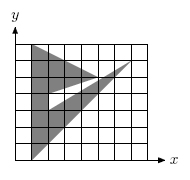

Europe - Northeastern Europe & Russian Republic - 2006/2007
| 3702 - ASCII Art Europe - Northeastern Europe & Russian Republic - 2006/2007 | ||||
| Submit | Ranking | ||||
ASCII art is an art of creating pictures with a grid of ASCII characters. There are many styles of ASCII art, but we are interested in the most primitive one, where just an overall character density is used to represent differently shaded areas of the picture.
You should write a proof-of-concept program that renders a filled closed polygon with a rectangular grid of ASCII characters. The whole process is explained in detail below.
Let OXY
The input will contain several test cases, each of them as described below.
Consecutive test cases are separated by a single blank line.
The first line of the input contains integers n
For each test case, the output must follow the description below.
The outputs of two consecutive cases will be separated by a blank line.
Write to the output h
 x < w
x < w
 y < h
y < h
Pixel percentage area filled Character name Glyph ASCII code From 0% inclusive to 25% exclusive Full stop . 46 From 25% inclusive to 50% exclusive Plus sign + 43 From 50% inclusive to 75% exclusive Small letter o o 111 From 75% inclusive to 100% exclusive Dollar sign $ 36 100% Number sign # 35
The resulting ASCII characters for all pixels are
printed top-to-bottom and left-to-right to get a visual representation
of the drawing.

Input
 n
n 100, 1
100, 1 w, h
w, h 100)
100)
 xi
xi w, 0
w, 0 yi
yi h)
h)
Output
Sample Input
6 8 7
7 6
1 0
1 7
5 5
2 4
2 3
Sample Output
.$+.....
.##$+...
.#$oo+..
.#+$o...
.##o....
.#o.....
.o......
Northeastern Europe & Russian Republic 2006-2007